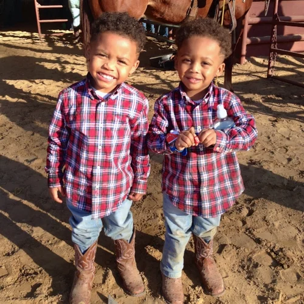

Pick an Age Group
Three Ways In
Same history, different doorways — each built for how that age actually learns.

Ages 4–6
Story Time
Big voices, puppets, and picture books. Thirty minutes, lots of wiggling encouraged.
- 30 minutes
- Read-aloud with costume and props
- Simple call-and-response songs
- Take-home coloring page

Ages 7–9
Hands-On History
Artifact tables, dress-up, and "guess what this tool did" — questions welcome and constant.
- 45 minutes
- Real artifact handling stations
- Costume try-on and role-play
- Grade-aligned social studies tie-ins

Ages 10–13
Culture Chat
Real conversation about identity, language, and why traditions stick — with room to disagree.
- 60 minutes
- Primary-source discussion
- Student-led Q&A
- Optional follow-up project prompt